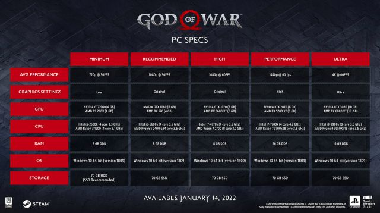

God of war para pc pronto estara disponible

Kratos y Atreus darán el salto a PC el 14 de enero de 2022 y Sony ha compartido ya todos los requistos del juego. ¿Funcionará God of War a 4K y 60 fps?
Hace unos años nos hubiera sonado surrealista, pero los tiempos cambian y en la actualidad Sony cada vez tiene menos reparos en lanzar sus exclusivos en PC, objetivo para el que hasta ha llegado a crear un sello propio, PlayStation PC. Bajo éste, los usuarios de componentes ya han podido disfrutar de títulos como Horizon: Zero Dawn (desde 2020) y Days Gone (desde el verano pasado), a los que muy pronto se sumará God of War. Concretamente el próximo 14 de enero de 2022. Será entonces cuando Kratos y Atreus lleven a PC la aventura que se proclamara Juego del Año 2018 y para la que dentro de algunos meses también tendremos secuela, God of War Ragnarok, presumiblemente exclusiva de PS4 y PS5 durante varios años.
Con la fecha tan cerca en el calendario, Santa Monica Studio ha querido ir despejando cualquier duda sobre los distintos requisitos necesarios para disfrutar del juego y el rendimiento que podemos esperar del mismo en función del equipo que tengamos. Unas especificaciones de lo más detalladas que no se andan con chiquitas y exigen un buen equipo para superar el nivel de PS4, más aún si queremos disfrutar de God of War en 4K y 60 fps. Como novedad, el título incluye un modo rendimiento que se conforma con los 1440p para alcanzar las 60 imágenes por segundo, tan imprescindibles en todo hack and slash que se precie. Os dejamos con todos los detalles para que hagáis vuestras cábalas:

God of War PC – Requisitos mínimos:
- Rendimiento esperado: Bajo - 720p / 30 fps
- Sistema operativo: Windows 10 64bit (min version 1809)
- Almacenamiento: 70 GB HDD
- Memoria RAM: 16 GB DDR
- Procesador (CPU): Intel i5-6600k (4 núcleos 3.5 GHz) / AMD Ryzen 5 2400 (4 núcleos 3.6 GHz)
- Tarjeta gráfica: NVIDIA GTX 1060 (6 GB) / AMD RX 570 (4 GB)
God of War PC – Requisitos recomendados:
- Rendimiento esperado: Original - 1080p / 30 fps
- Sistema operativo: Windows 10 64bit (min version 1809)
- Almacenamiento: 70 GB HDD
- Memoria RAM: 16 GB DDR
- Procesador (CPU): Intel i5-6600k (4 núcleos 3.5 GHz) / AMD Ryzen 5 2400 (4 núcleos 3.6 GHz)
- Tarjeta gráfica: NVIDIA GTX 1060 (6 GB) / AMD RX 570 (4 GB)
God of War PC – Requisitos en Alto:
- Rendimiento esperado: Original - 1080p / 60 fps Sistema operativo: Windows 10 64bit (min version 1809)
- Almacenamiento: 70 GB HDD
- Memoria RAM: 8 GB DDR
- Procesador (CPU): Intel i7-4770k (4 núcleos 3.5 GHz) / AMD Ryzen 7 2700 (8 núcleos 3.2 GHz)
- Tarjeta gráfica: NVIDIA GTX 1070 (8 GB) / AMD RX 5600 XT (6 GB)
God of War PC – Requisitos en Ultra
- Rendimiento esperado: Alto - 4K / 60 fps
- Sistema operativo: Windows 10 64bit (min version 1809)
- Almacenamiento: 70 GB HDD
- Memoria RAM: 16 GB DDR
- Procesador (CPU):Intel i9-9900k (8 núcleos 3.6 GHz) / AMD Ryzen 9 3950 (16 núcleos 3.5 GHz)
- Tarjeta gráfica: NVIDIA RTX 3080 (10 GB) / AMD RX 6800 XT (16 GB)